<!doctype html><html lang=ru><head><meta charset=utf-8><meta name=viewport content='width=device-width,initial-scale=1'><title>Gartner — Top 10 Strategic Tech Trends 2027</title><style>
:root{--bg:#f7f6f3;--card:#fff;--ink:#1b1b1f;--muted:#6b6b75;--line:#e3e0d8;--accent:#1b2a6b;--accent2:#0f8a6a}
*{box-sizing:border-box}body{margin:0;background:var(--bg);color:var(--ink);font:16px/1.55 -apple-system,"Segoe UI",Roboto,Arial,sans-serif}
header.top{padding:30px 40px 16px;background:linear-gradient(135deg,#1b2a6b,#0f3b6a);color:#fff}
header.top h1{margin:0 0 6px;font-size:25px}header.top p{margin:2px 0;color:#cdd6f0;font-size:14px}
.wrap{display:grid;grid-template-columns:290px 1fr}.wrap>nav{position:sticky;top:0;max-height:100vh;overflow:auto;padding:14px 10px;border-right:1px solid var(--line);background:#fbfaf7}
nav a{display:block;padding:3px 8px;border-radius:6px;color:#333;text-decoration:none;font-size:13px}
nav a:hover{background:#eee9dd}nav .num{color:var(--muted);font-variant-numeric:tabular-nums;margin-right:6px}
#q{width:100%;padding:7px 9px;border:1px solid var(--line);border-radius:8px;font-size:13.5px;margin-bottom:6px}
main{padding:22px 30px 70px;max-width:1200px}
section.slide{background:var(--card);border:1px solid var(--line);border-radius:14px;margin:0 0 20px;overflow:hidden}
.shead{display:flex;gap:12px;align-items:baseline;padding:13px 18px;border-bottom:1px solid var(--line);background:#fcfbf8}
.snum{font:600 13px/1 ui-monospace,monospace;color:#fff;background:var(--accent);padding:6px 9px;border-radius:7px}
.shead h2{margin:0;font-size:18px}
.body{display:grid;grid-template-columns:1fr 430px;gap:16px;padding:14px 18px}
.body.full{grid-template-columns:1fr;padding:12px}
.body img{width:100%;border:1px solid var(--line);border-radius:8px}
p.para{margin:0 0 9px;font-size:15px}p.li{margin:0 0 5px 4px;font-size:15px}
h3.sh{margin:12px 0 6px;font-size:15.5px;color:var(--accent)}
table{border-collapse:collapse;width:100%;font-size:14px;margin:4px 0 12px}
th,td{border-bottom:1px solid var(--line);padding:5px 8px;text-align:left;vertical-align:top}
th{background:#f4f2ec;font-size:13px}td.v{text-align:right;font-variant-numeric:tabular-nums;white-space:nowrap;width:110px}
.note{background:#f3f1ea;border-left:3px solid var(--accent2);padding:7px 11px;font-size:13px;border-radius:6px;margin:0 0 10px}
@media (max-width:1000px){.wrap{grid-template-columns:1fr}.body{grid-template-columns:1fr}}
@media print{nav{display:none}section.slide{break-inside:avoid;border:none}}
</style></head><body><header class=top><h1>Gartner — Top 10 Strategic Tech Trends 2027</h1><p>28 страниц. Источник: Gartner_Top 10 Strategic Tech Trends_2027 (28 pgs).pdf. Текст — из текстового слоя PDF.</p></header><div class=wrap><nav><input id="q" placeholder="Поиск…" oninput="filter()"><a href="#s1"><span class="num">01</span>Top 10 Strategic Technology Trends for 2027</a><a href="#s2"><span class="num">02</span>Mastering the new boundaries of machine beha</a><a href="#s3"><span class="num">03</span>Gartner Top 10 Strategic Technology Trends f</a><a href="#s4"><span class="num">04</span>Leverage the nontextual</a><a href="#s5"><span class="num">05</span>Trend 1 Large quantitative models</a><a href="#s6"><span class="num">06</span>Delivering results with LQMs</a><a href="#s7"><span class="num">07</span>Trend 2 Speech reasoning models</a><a href="#s8"><span class="num">08</span>Delivering results with speech reasoning mod</a><a href="#s9"><span class="num">09</span>Trend 3 World models</a><a href="#s10"><span class="num">10</span>Delivering results with world models</a><a href="#s11"><span class="num">11</span>Govern the autonomous</a><a href="#s12"><span class="num">12</span>Trend 4 AI context platforms</a><a href="#s13"><span class="num">13</span>Delivering results with AI context platforms</a><a href="#s14"><span class="num">14</span>Trend 5 AI coding agent harness</a><a href="#s15"><span class="num">15</span>Delivering results with AI coding agent harn</a><a href="#s16"><span class="num">16</span>Trend 6 AI agent identity</a><a href="#s17"><span class="num">17</span>Delivering results with AI agent identities</a><a href="#s18"><span class="num">18</span>48 hours</a><a href="#s19"><span class="num">19</span>Delivering results with autonomous exposure </a><a href="#s20"><span class="num">20</span>Architect durable agility</a><a href="#s21"><span class="num">21</span>Trend 8 SovereignTech</a><a href="#s22"><span class="num">22</span>Delivering results with SovTech</a><a href="#s23"><span class="num">23</span>Trend 9 Disposable applications</a><a href="#s24"><span class="num">24</span>Delivering results with disposable applicati</a><a href="#s25"><span class="num">25</span>Trend 10 Wetware as a service</a><a href="#s26"><span class="num">26</span>Delivering results with wetware as a service</a><a href="#s27"><span class="num">27</span>Actionable, objective insights</a><a href="#s28"><span class="num">28</span>Connect with us</a></nav><main><section class="slide" id="s1"><div class="shead"><span class="snum">01</span><h2>Top 10 Strategic Technology Trends for 2027</h2></div><div class="body"><div><p class="note">Страница без текстового слоя (изображение): текст в растре, см. рендер слайда.</p><p class="para">Top 10 Strategic Technology Trends for 2027</p></div><div><a href="slides/01.jpg" target="_blank">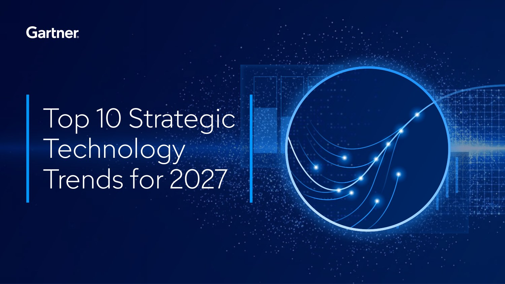</a></div></div></section><section class="slide" id="s2"><div class="shead"><span class="snum">02</span><h2>Mastering the new boundaries of machine behavior</h2></div><div class="body"><div><p class="para">It’s no secret that technology leaders must safely lead their organizations into the autonomous era. While traditional IT relied on software scarcity, 2027 will deliver new levels of software abundance. Running static code will be replaced with the orchestration of autonomous machine workers, sensory AI and sovereign limits. Navigating this shift requires an immediate, C-Level focus across three operational fronts:</p><p class="para">Leverage the nontextual AI frontier</p><p class="para">Models that calculate, hear and simulate. Deliver specialized mathematical-, voice- and physics-based models that solve complex problems with deterministic precision and sensory depth.</p><p class="para">The Gartner Top 10 Strategic Technology Trends for 2027 can help leaders build the boundaries needed to deliver trusted outcomes. As you explore these trends, consider how they align with your organization’s strategic ambitions and how they can be integrated into your planning to drive sustainable growth and competitive advantage.</p><p class="para">Gene Alvarez Distinguished Vice President, Business and Technology Insights, Gartner</p><p class="para">Govern the autonomous agent platform</p><p class="para">System-level control planes for trustworthy autonomy. Deploy platform-owned AI context systems, AI coding harnesses, AI secure identity systems and automated exposure remediation to securely constrain machine behavior and exposure.</p><p class="para">Top 10 Strategic Technology Trends for 2027</p><p class="para">Architect durable agility</p><p class="para">Transitioning to sovereign, disposable and organic environments. Secure long-term independence using sovereign stacks, disposable applications designed for clean decommissioning and low-power biological computing.</p><p class="note">Gartner for CIOs Follow Us on LinkedIn Become a Client</p></div><div><a href="slides/02.jpg" target="_blank">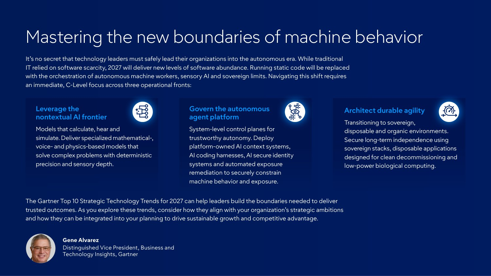</a></div></div></section><section class="slide" id="s3"><div class="shead"><span class="snum">03</span><h2>Gartner Top 10 Strategic Technology Trends for 2027</h2></div><div class="body"><div><p class="note">Числа взяты из формулировок слайда дословно; подпись строки — фраза, в которой число стоит.</p><p class="para">Technology decisions require a balanced approach to immediate operational efficiency and long-term business survivability.</p><p class="para">This multiyear outlook organizes the Gartner Top Strategic Technology Trends into sequential planning horizons to help you determine when to prepare, pilot and scale each capability.</p><p class="para">Use these phases to align your technology roadmap with broader corporate goals, ensuring your business stays ahead of volatility while systematically upgrading its core capabilities.</p><p class="para">Now 1 – 3 years </p><h3 class="sh">Leverage the nontextual AI frontier</h3><p class="para">1 Large quantitative models</p><p class="para">2 Speech reasoning models</p><p class="para">3 World models</p><p class="para">Near 3 – 5 years </p><h3 class="sh">Govern the autonomous agent platform</h3><p class="para">4 AI context platforms</p><p class="para">5 AI coding agent harness</p><p class="para">6 AI agent identity</p><p class="para">7 Autonomous exposure remediation</p><p class="para">Gartner for CIOs Follow Us on LinkedIn Become a Client</p><p class="para">Future 5+ years</p><p class="para">Top 10 Strategic Technology Trends for 2027</p><h3 class="sh">Architect durable agility</h3><p class="para">8 SovereignTech</p><p class="para">9 Disposable applications</p><p class="para">10 Wetware as a service</p><table><tr><th>Показатель</th><th>Значение</th></tr><tr><td>Now 1 – 3 years</td><td class=v>1</td></tr><tr><td>3 World models</td><td class=v>3</td></tr><tr><td>2 Speech reasoning models</td><td class=v>2</td></tr><tr><td>4 AI context platforms</td><td class=v>4</td></tr><tr><td>Near 3 – 5 years</td><td class=v>5</td></tr><tr><td>6 AI agent identity</td><td class=v>6</td></tr><tr><td>7 Autonomous exposure remediation</td><td class=v>7</td></tr><tr><td>8 SovereignTech</td><td class=v>8</td></tr><tr><td>9 Disposable applications</td><td class=v>9</td></tr><tr><td>10 Wetware as a service</td><td class=v>10</td></tr></table></div><div><a href="slides/03.jpg" target="_blank">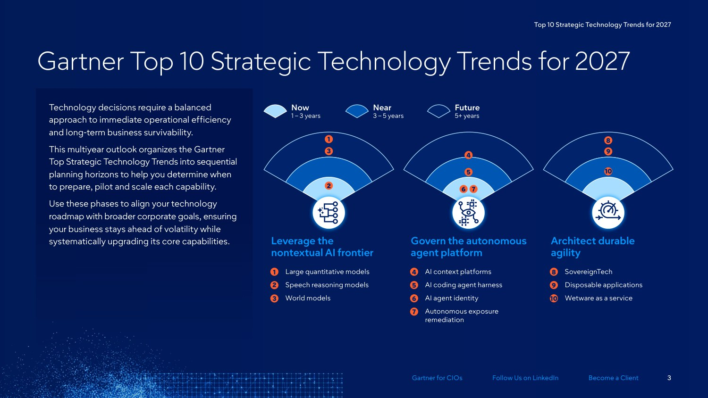</a></div></div></section><section class="slide" id="s4"><div class="shead"><span class="snum">04</span><h2>Leverage the nontextual</h2></div><div class="body"><div><h3 class="sh">AI frontier</h3><h3 class="sh">Models that calculate, hear and simulate to solve complex problems</h3><p class="para">AI is expanding beyond text into speech, numbers and physical environments. But voice-native systems reasoning is shallower than text-based models, creating safety risks for businesses that rely on a single unsupervised voice model. These trends focus on complexity-based routing: fast models for routine tasks, deep reasoning for complex decisions.</p><p class="para">Top 10 Strategic Technology Trends for 2027</p><p class="note">Gartner for CIOs Follow Us on LinkedIn Become a Client</p></div><div><a href="slides/04.jpg" target="_blank">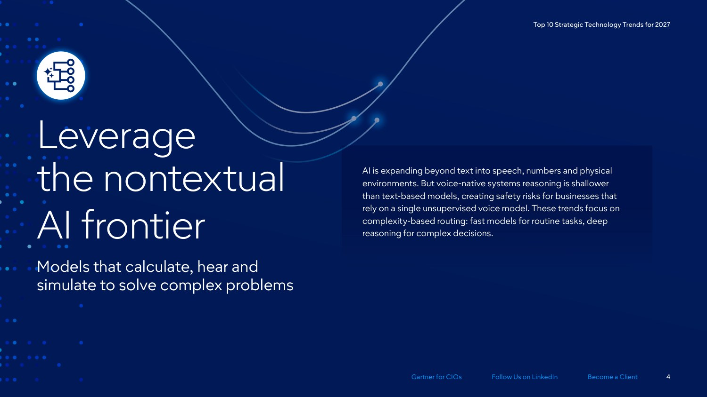</a></div></div></section><section class="slide" id="s5"><div class="shead"><span class="snum">05</span><h2>Trend 1 Large quantitative models</h2></div><div class="body"><div><p class="note">Числа взяты из формулировок слайда дословно; подпись строки — фраза, в которой число стоит.</p><h3 class="sh">Trend 1 Large quantitative models</h3><p class="para">What is it?</p><p class="para">Modular, hybrid neural network architectures built to process and analyze quantitative data. They use deterministic calculations, established mathematical formulas, statistical methods and numerical algorithms to accurately model complex systems.</p><p class="para">Why trending?</p><p class="para">Rapid expansion of GenAI investments can’t cover every business use case, especially numerical ones. Large language models (LLMs) fail at mathematical reasoning because they guess probabilistically. Large quantitative models (LQMs) are designed explicitly for numerical reasoning. They are far less resource-intensive, requiring significantly less memory, storage and compute. This specialized architecture provides a direct shortcut to rapid forecasting while slashing your reliance on expensive token-based inference.</p><p class="para">What’s next?</p><p class="para">By 2030, LQMs will replace LLMs in 25% of strategic forecasting and operational modeling tasks across major enterprise functions.</p><p class="para">Core components of large quantitative models</p><p class="para">LQMs are trained on datasets like time series data, simulation data or forecasting data.</p><p class="para">Hybrid neural network</p><p class="para">Quantitative</p><p class="para">datasets</p><p class="para">Gartner for CIOs Follow Us on LinkedIn Become a Client</p><p class="para">architectures</p><p class="para">Large quantitative</p><p class="para">models</p><p class="para">Domain-</p><p class="para">specific knowledge</p><p class="para">Top 10 Strategic Technology Trends for 2027</p><p class="para">LQMs combine foundational pattern learning with capturing complex, nonlinear relationships in numerical data.</p><p class="para">LQMs’ value lies in leveraging scientific knowledge like the laws of physics, engineering, biology and chemistry.</p><p class="note">Source: Gartner</p><table><tr><th>Показатель</th><th>Значение</th></tr><tr><td>By 2030, LQMs will replace LLMs in 25% of strategic forecasting and operational modeling tasks across major enterprise functions.</td><td class=v>25</td></tr></table></div><div><a href="slides/05.jpg" target="_blank">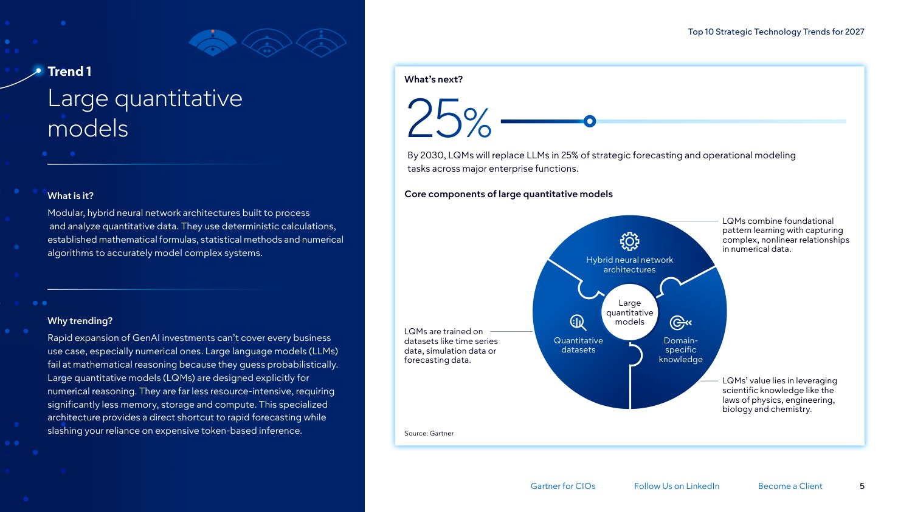</a></div></div></section><section class="slide" id="s6"><div class="shead"><span class="snum">06</span><h2>Delivering results with LQMs</h2></div><div class="body"><div><h3 class="sh">Trend 1 | Large Quantitative Models</h3><h3 class="sh">Action plan to drive modular automation and seamless integration</h3><p class="para">Steps 1 Deploy hybrid AI architectures 2 Target high-value mathematical use cases</p><p class="para">Expected outcome</p><p class="para">Action Combine the conversational strength of LLMs with the deterministic analytical power of quantitative models.</p><h3 class="sh">Key players to support implementation success</h3><p class="para">CIO IT partners Business partners</p><p class="para">Lead: Establish a strategy for quantitative AI that improves forecasting, planning and operational decision making.​</p><p class="para">Invest: Prioritize high-value use cases where mathematical precision and predictive accuracy create competitive advantage.​</p><p class="para">Drive: Accelerate AI value by integrating LQMs into broader composite AI initiatives.​</p><p class="para">A shortcut to rapid forecasting Unprecedented business agility Safe deployment of autonomous forecasting</p><p class="para">Consider financial risk modeling, supply chain logistics, energy forecasting and agricultural soil analysis.</p><p class="para">Data and AI teams: Build the data foundations, governance practices and model capabilities required for accurate forecasting and simulation.​</p><p class="para">Enterprise architecture: Establish scalable platforms that integrate LQMs with existing AI, analytics and business applications.​</p><p class="para">ModelOps and governance: Monitor model performance, data quality and explainability to maintain trust and reliability.​</p><p class="para">3 Establish robust data validation protocols</p><p class="para">Ensure all numerical inputs remain flawless and prevent skewed forecasting models.</p><p class="para">Gartner for CIOs Follow Us on LinkedIn Become a Client</p><p class="para">Operations leaders: Identify opportunities to improve forecasting, planning and operational efficiency.​</p><p class="para">Finance and strategy: Apply quantitative insights to scenario planning, risk management and investment decisions.​</p><p class="para">Business domain experts: Validate model assumptions, inputs and outcomes to ensure business relevance and adoption.</p><p class="para">Top 10 Strategic Technology Trends for 2027</p><p class="para">4 Adapt your ModelOps strategy</p><p class="para">Bypassed model retraining and lower compute costs</p><p class="para">Continuously monitor deployments, prevent model overfitting and maintain high-yield operational efficiency.</p></div><div><a href="slides/06.jpg" target="_blank">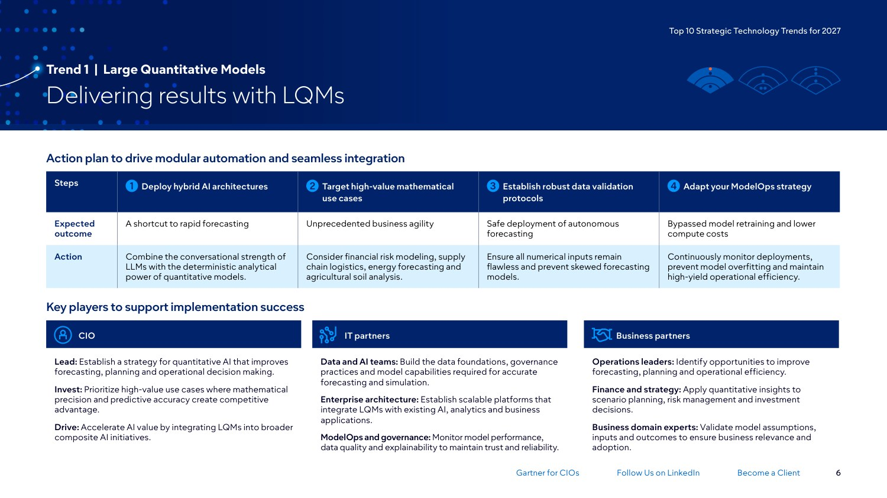</a></div></div></section><section class="slide" id="s7"><div class="shead"><span class="snum">07</span><h2>Trend 2 Speech reasoning models</h2></div><div class="body"><div><p class="note">Числа взяты из формулировок слайда дословно; подпись строки — фраза, в которой число стоит.</p><h3 class="sh">Trend 2 Speech reasoning models</h3><p class="para">What is it?</p><p class="para">Voice AI systems that reason directly on audio, tracking context and intent across a conversation to determine what to do next. They bypass traditional text-transcription by reasoning and executing chained tasks, extending autonomous resolution to multiturn problem solving, context shifts and error recovery.</p><p class="para">Why trending?</p><p class="para">Voice remains the highest-volume enterprise interaction channel, but even a decade of customer support automation has failed to deliver sufficient accuracy, speed and resolution rates. Speech reasoning models close that gap at scale, making complex, judgment-intensive conversations viable to automate. This represents a fundamental architectural change that goes well beyond an incremental voice upgrade, extending even into physical AI where voice serves as the primary interface for robots and humanoids.</p><p class="para">What’s next?</p><p class="para">By 2030, over 70% of enterprise voice interactions will be handled autonomously by speech models, up from less than 10% in 2026.</p><p class="para">The stages of speech evolution Scaling human operations to agents</p><p class="para">Human-operated voice</p><p class="para">Menu-driven IVR</p><p class="para">Agents handle</p><p class="para">every call</p><p class="para">Automatic speech</p><p class="para">recognition</p><p class="para">Transcription</p><p class="para">Cascaded models</p><p class="para">Speech to Text &gt; LLM</p><p class="para">Gartner for CIOs Follow Us on LinkedIn Become a Client</p><p class="para">Speech to speech</p><p class="para">Operate on audio, preserving</p><p class="para">tone, emotion, intent</p><p class="para">&gt; Text to Speech</p><p class="para">Top 10 Strategic Technology Trends for 2027</p><p class="para">Speech reasoning models</p><p class="para">Sustain complex multiturn conversations</p><p class="para">(judgment intensive)</p><p class="para">Autonomous agent</p><p class="note">Source: Gartner</p><table><tr><th>Показатель</th><th>Значение</th></tr><tr><td>By 2030, over 70% of enterprise voice interactions will be handled autonomously by speech models, up from less than 10% in 2026.</td><td class=v>70</td></tr></table></div><div><a href="slides/07.jpg" target="_blank">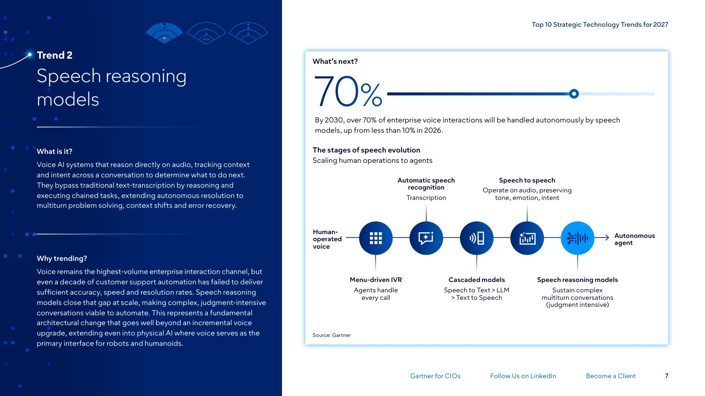</a></div></div></section><section class="slide" id="s8"><div class="shead"><span class="snum">08</span><h2>Delivering results with speech reasoning models</h2></div><div class="body"><div><h3 class="sh">Trend 2 | Speech Reasoning Models</h3><h3 class="sh">Action plan to drive modular automation and seamless integration</h3><p class="para">Steps 1 Draft strict requirements 2 Classify requirements by complexity 3 Inventory high-volume interactions</p><p class="para">Expected outcome</p><p class="para">Action Draft strict consent, privacy and audit logging requirements. Assign clear owners for each jurisdiction.</p><h3 class="sh">Key players to support implementation success</h3><p class="para">CIO IT partners Business partners</p><p class="para">Lead: Establish a strategy for autonomous voice interactions across customer and employee experiences.​</p><p class="para">Prioritize: Invest in conversational AI capabilities that improve service efficiency while maintaining trust and accuracy.​</p><p class="para">Govern: Define policies for consent, privacy, compliance and responsible use of voice data.​</p><p class="para">Assess and confirm compliance readiness A sharper build-or-buy strategy Clear labeling standards</p><p class="para">Classify voice interactions by complexity to route between low-latency tiers and deeper reasoning models.</p><p class="para">Customer experience and AI teams: Design and deploy speech reasoning solutions that support complex, multiturn interactions.​</p><p class="para">Data and platform teams: Manage voice data, model performance and domain-specific training assets.​</p><p class="para">Security and compliance: Implement privacy controls, audit logging and governance for voice-based AI interactions.​</p><p class="para">Gartner for CIOs Follow Us on LinkedIn Become a Client</p><p class="para">Ahead of any domain adaptation work, catalog the highest-volume recorded voice interactions.</p><p class="para">Marketing and communications: Help define voice personas, conversational standards and customer trust requirements.​</p><p class="para">Customer service leaders: Identify high-value use cases and validate interaction quality and resolution outcomes.​</p><p class="para">Legal and compliance: Ensure adherence to consent, privacy and regulatory requirements across jurisdictions.​</p><p class="para">Top 10 Strategic Technology Trends for 2027</p></div><div><a href="slides/08.jpg" target="_blank">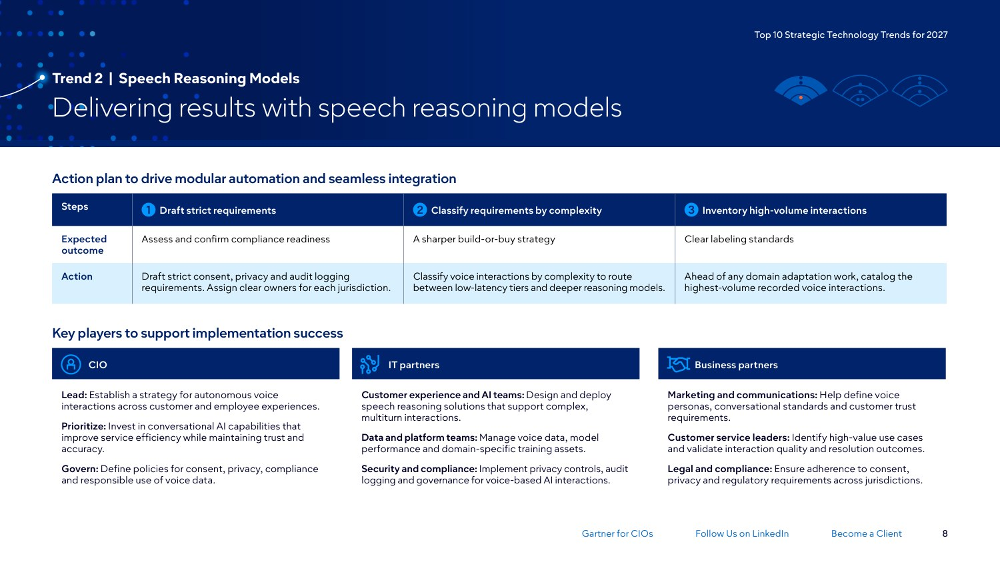</a></div></div></section><section class="slide" id="s9"><div class="shead"><span class="snum">09</span><h2>Trend 3 World models</h2></div><div class="body"><div><p class="note">Данные слайда — в диаграмме: подписи серий и значений в текстовом слое не сходятся в пары (многорядные бары, легенда отдельно), поэтому числа сохранены перечислением в порядке PDF. Точные значения — на рендере слайда. Числа на слайде: 40.</p><h3 class="sh">Trend 3 World models</h3><p class="para">What is it?</p><p class="para">Computational systems trained on multimodal datasets to learn abstract representations of physical and virtual environments. They enable autonomous agents to simulate potential future states, predict outcomes and understand the consequences of their actions before execution.</p><p class="para">Why trending?</p><p class="para">Language models lack a native grasp of physical reality, causality and spatial logic. World models are progressively resolving this bottleneck by establishing a physics-first paradigm that allows machines to comprehend space, time and causality. Surging investments in robotics, autonomous vehicles and spatial computing are driving this cutting-edge development.</p><p class="para">Although high computational costs currently restrict generalized deployment, model training costs will fall tenfold within three years, making enterprise simulations economically viable.</p><p class="para">What’s next?</p><p class="para">By 2030, 40% of robotics applications will incorporate world models to drive optimal decisions in adaptive environments, compared with less than 1% in 2025.</p><p class="para">World models: Different models for different worlds</p><p class="para">Data science</p><p class="para">The world is a probabilistic distribution. Sample techniques: MBRL, VAE, MAE, autoregressive, diffusion</p><p class="para">Physics</p><p class="para">The world is governed by physical laws. Sample techniques: physics simulator, expert system</p><p class="para">Neuroscience</p><p class="para">The world mirrors the human mind. Sample techniques: active inference, cognitive architecture</p><p class="para">Gartner for CIOs Follow Us on LinkedIn Become a Client</p><p class="para">Top 10 Strategic Technology Trends for 2027</p><p class="para">Graphics</p><p class="para">The world is a three-dimensional space. Sample techniques: spatial AI, 3DGS</p><p class="para">Cybernetics</p><p class="para">The world is a dynamic system and control loop. Sample techniques: MPC, JEPA</p><p class="para">Social science</p><p class="para">The world is collective intelligence. Sample techniques: complex system, multiagent system</p><p class="para">Значения на слайде: 1, 40</p><p class="note">Source: Gartner</p></div><div><a href="slides/09.jpg" target="_blank">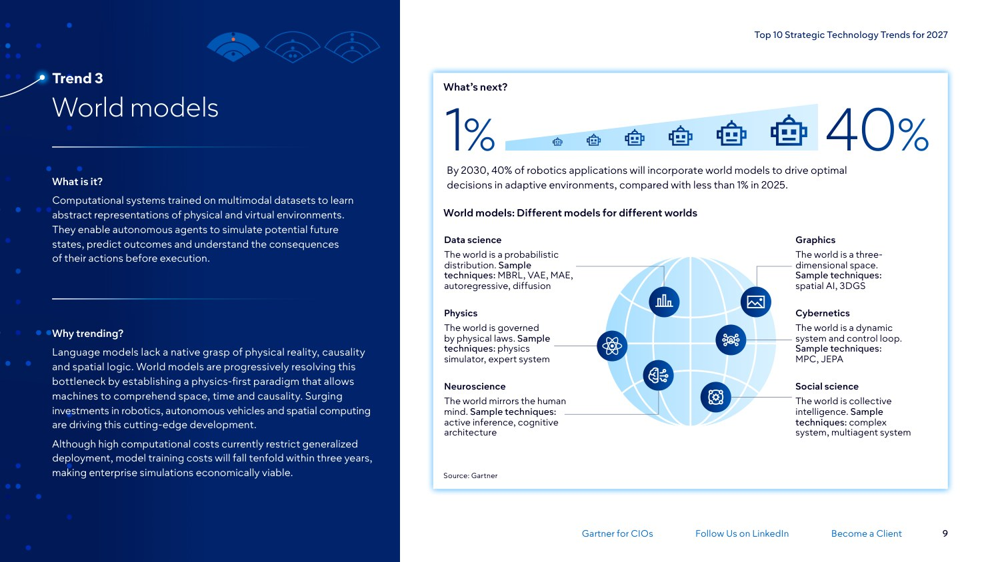</a></div></div></section><section class="slide" id="s10"><div class="shead"><span class="snum">10</span><h2>Delivering results with world models</h2></div><div class="body"><div><h3 class="sh">Trend 3 | World Models</h3><h3 class="sh">Action plan to drive modular automation and seamless integration</h3><p class="para">Steps 1 Establish a five-year roadmap 2 Prove measurable business value 3 Build a deployment launchpad</p><p class="para">Expected outcome</p><p class="para">Action Systematically invest in and operationalize world models. Target high-impact and fast ROI scenarios in process optimization, productivity and safety.</p><h3 class="sh">Key players to support implementation success</h3><p class="para">CIO IT partners Business partners</p><p class="para">Lead: Develop a long-term strategy for leveraging world models to improve decision making, planning and intelligent automation.​</p><p class="para">Invest: Build the data, technology and talent foundations needed to operationalize world models at scale.​</p><p class="para">Drive: Demonstrate business value through improved forecasting, risk reduction and operational optimization.​</p><p class="para">Industrialized intelligence and predictive foresight Enhanced decision support and process optimization Unprecedented decision automation</p><p class="para">Data and AI teams: Build multimodal data pipelines that enable simulation, prediction and autonomous decision support.​</p><p class="para">Enterprise architecture: Create scalable foundations that support future world model deployment and integration.​</p><p class="para">Platform and engineering teams: Establish testing, validation and monitoring practices to ensure reliability and trust.​</p><p class="para">Gartner for CIOs Follow Us on LinkedIn Become a Client</p><p class="para">Exploit multimodal capabilities and integrate synthetic data into end-to-end pipelines.</p><p class="para">Business leaders: Identify high-value use cases for scenario planning, forecasting and operational optimization.​</p><p class="para">Operations teams: Validate models using real-world processes and outcomes.​</p><p class="para">Finance and strategy: Support investments that improve resilience, productivity and long-term competitiveness.​</p><p class="para">Top 10 Strategic Technology Trends for 2027</p></div><div><a href="slides/10.jpg" target="_blank">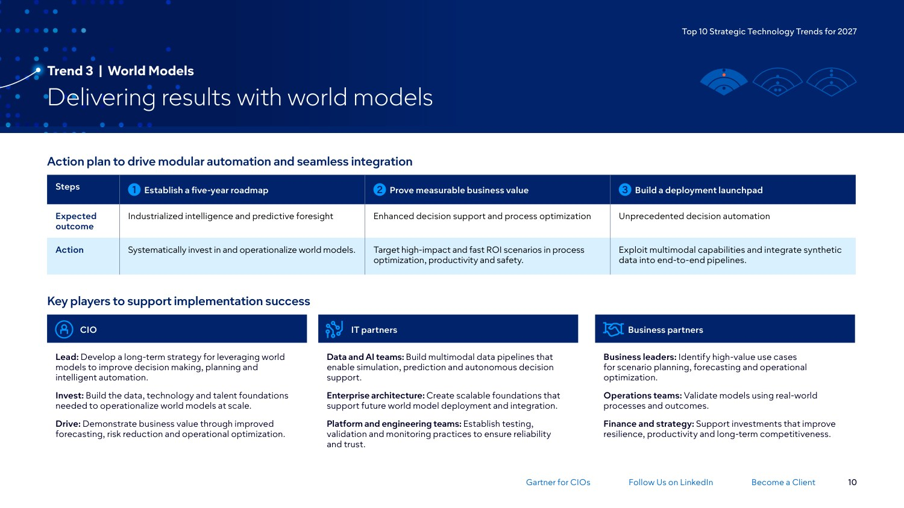</a></div></div></section><section class="slide" id="s11"><div class="shead"><span class="snum">11</span><h2>Govern the autonomous</h2></div><div class="body"><div><h3 class="sh">agent platform</h3><h3 class="sh">System-level control planes for trustworthy autonomy</h3><p class="para">Developers are deploying digital workers that generate code, patch vulnerabilities and execute transactions in real time. But as machines produce software faster than teams can audit it, manual reviews become the primary bottleneck. These trends cover platform-owned governance: harnesses and semantic context engines that constrain what autonomous agents can see, use and produce.</p><p class="para">Top 10 Strategic Technology Trends for 2027</p><p class="note">Gartner for CIOs Follow Us on LinkedIn Become a Client</p></div><div><a href="slides/11.jpg" target="_blank">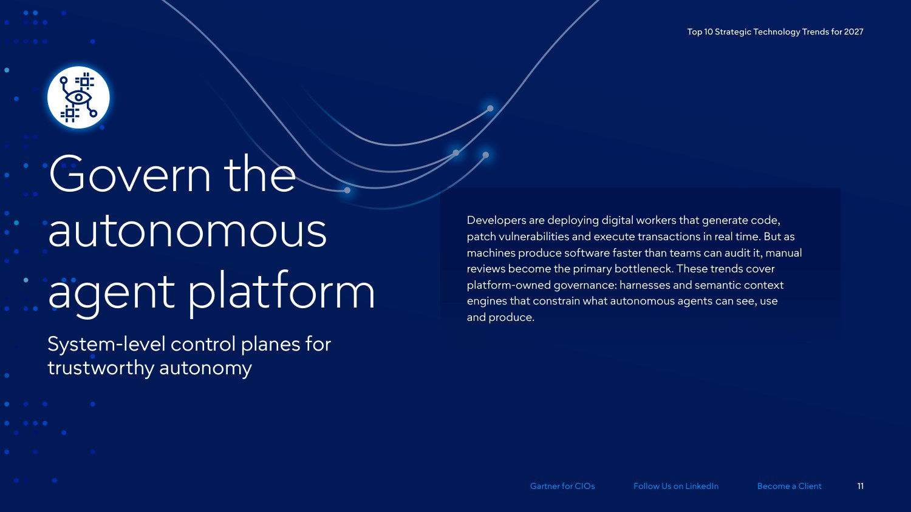</a></div></div></section><section class="slide" id="s12"><div class="shead"><span class="snum">12</span><h2>Trend 4 AI context platforms</h2></div><div class="body"><div><p class="note">Данные слайда — в диаграмме: подписи серий и значений в текстовом слое не сходятся в пары (многорядные бары, легенда отдельно), поэтому числа сохранены перечислением в порядке PDF. Точные значения — на рендере слайда. Числа на слайде: 80.</p><h3 class="sh">Trend 4 AI context platforms</h3><p class="para">What is it?</p><p class="para">This capability curates, integrates and delivers the dynamic background knowledge AI agents need to interpret inputs, make decisions and act in alignment with business objectives. It unifies scattered corporate knowledge into a machine-readable truth layer to ground autonomous digital workers.</p><p class="para">Why trending?</p><p class="para">The rise of autonomous digital workers exposes legacy data limitations. While 42% of enterprises plan to deploy AI agents by the end of 2026, only 22% currently capture significant value from GenAI. This gap stems from fragmented operational knowledge, causing frequent hallucinations and prohibitive computing costs. To prevent stalled agentic deployments, organizations must deploy context platforms to systematically organize and prioritize business knowledge.</p><p class="para">What’s next?</p><p class="para">By 2027, organizations that prioritize semantics in AI-ready data will increase agentic AI accuracy by up to 80% and reduce costs by up to 60%.</p><p class="para">The 3 components of the context layer</p><p class="li">• • Entities • Environment conditions • Right-time data • Organizational knowledge (RAG)</p><p class="para">Execution</p><p class="para">Operational Provenance</p><p class="para">state</p><p class="para">Gartner for CIOs Follow Us on LinkedIn Become a Client</p><p class="para">Semantics</p><p class="para">Governance</p><p class="para">Context</p><p class="para">layer</p><p class="para">Behavior</p><p class="para">Top 10 Strategic Technology Trends for 2027</p><p class="li">• • Ontology/KG • Metrics • Rules • Ownership • Policies</p><p class="li">• • Tracking of data • Processes • Decisions • Actions • Outcomes</p><p class="para">Значения на слайде: 60, 80</p><p class="note">Source: Gartner</p></div><div><a href="slides/12.jpg" target="_blank">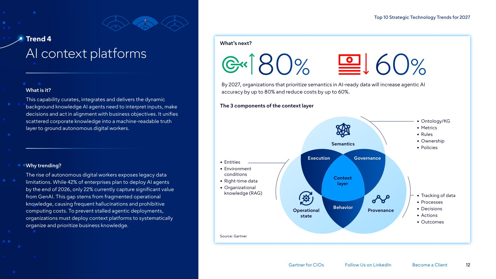</a></div></div></section><section class="slide" id="s13"><div class="shead"><span class="snum">13</span><h2>Delivering results with AI context platforms</h2></div><div class="body"><div><h3 class="sh">Trend 4 | AI Context Platforms</h3><h3 class="sh">Action plan to drive modular automation and seamless integration</h3><p class="para">Steps 1 Form a phased maturity roadmap 2 Establish dual-ontology governance architecture</p><p class="para">Expected outcome</p><p class="para">Action Centralize and structure policies before progressing to rule-based semantic automation.</p><h3 class="sh">Key players to support implementation success</h3><p class="para">CIO IT partners Business partners</p><p class="para">Lead: Establish a strategy for enterprise context management to support trusted, scalable AI agents.​</p><p class="para">Invest: Build a shared context platform that enables AI initiatives to scale across the enterprise.​</p><p class="para">Govern: Define ownership, accountability and standards for business knowledge, context and AI outcomes.​</p><p class="para">Progression from foundational capabilities to future-state semantics and knowledge</p><p class="para">Improved AI accuracy and reduced costs Interpretable, organized and secure knowledge</p><p class="para">Separate passive business rules from active, machine-generated decision traces.</p><p class="para">Data and AI teams: Build and manage the context platform, including semantic models, knowledge graphs and governance controls.​</p><p class="para">Enterprise architecture: Establish standards for reusable and portable context across AI initiatives​.</p><p class="para">Security and governance: Implement controls for data quality, access, lineage, auditability and compliance.​</p><p class="para">3 Enforce continuous, bi-directional ownership</p><p class="para">IT maintains infrastructure while business units validate guiding policies.</p><p class="para">Gartner for CIOs Follow Us on LinkedIn Become a Client</p><p class="para">Business domain leaders: Define, validate and continuously update the policies, rules and knowledge that guide AI agents.​</p><p class="para">Operations leaders: Identify high-value agent use cases and ensure context reflects current business processes and priorities.​</p><p class="para">Risk and compliance: Ensure contextual data aligns with regulatory and governance requirements.​</p><p class="para">Top 10 Strategic Technology Trends for 2027</p><p class="para">4 Acquire knowledge engineering talent</p><p class="para">Self-serve, curated knowledge between AI agents and humans</p><p class="para">Implement crucial semantic standards like RDF, OWL and SPARQL.</p></div><div><a href="slides/13.jpg" target="_blank">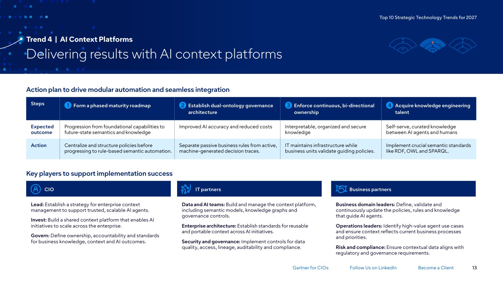</a></div></div></section><section class="slide" id="s14"><div class="shead"><span class="snum">14</span><h2>Trend 5 AI coding agent harness</h2></div><div class="body"><div><p class="note">Числа взяты из формулировок слайда дословно; подпись строки — фраза, в которой число стоит.</p><h3 class="sh">Trend 5 AI coding agent harness</h3><p class="para">What is it?</p><p class="para">A closed-loop system that governs autonomous developer behavior across the software development life cycle. It integrates coding platforms with enterprise context, model routing, verification gates and feedback loops to ensure software meets safety and compliance standards.</p><p class="para">Why trending?</p><p class="para">Coding agents are shifting from passive assistant tools into autonomous systems that execute software production work. However, scaling autonomous code generation without scaling validation shifts the bottleneck from writing code to proving that changes are safe, correct and maintainable. This ungoverned code generation rapidly compiles massive technical debt. Deploying harnesses sustains productivity by governing the entire software production system.</p><p class="para">What’s next?</p><p class="para">By late 2026, autonomous coding agents will generate 20% of all public commits, making closed-loop harnesses mandatory to prevent critical software delivery quality failures.</p><p class="para">The AI coding agent harness operates throughout the software development life cycle</p><p class="para">Human verification Fix Reject</p><p class="para">AI coding agent</p><p class="para">Input Transcriptions, photos, recordings</p><p class="para">Context External context layers External context layer External context layer External context layer</p><p class="para">Output Product requirements document (PRD)</p><p class="para">Tools Model Context Protocols (MCPs)/ command line interfaces (CLIs), skills, subagents</p><p class="para">Research Plan Implement Verify</p><p class="para">Gartner for CIOs Follow Us on LinkedIn Become a Client</p><p class="para">Execution Governance</p><p class="para">Approved PRD Single work unit Runnable software, PRD</p><p class="para">Epics, stories, tasks Runnable software Empirical findings and evidence</p><p class="para">MCPs/CLIs, skills, subagents</p><p class="para">Behavior</p><p class="para">Top 10 Strategic Technology Trends for 2027</p><p class="para">MCPs/CLIs, skills, subagents</p><p class="para">MCPs/CLIs, skills, subagents</p><p class="note">Source: Gartner</p><table><tr><th>Показатель</th><th>Значение</th></tr><tr><td>By late 2026, autonomous coding agents will generate 20% of all public commits, making closed-loop harnesses mandatory to prevent critical software delivery quality failures.</td><td class=v>20</td></tr></table></div><div><a href="slides/14.jpg" target="_blank">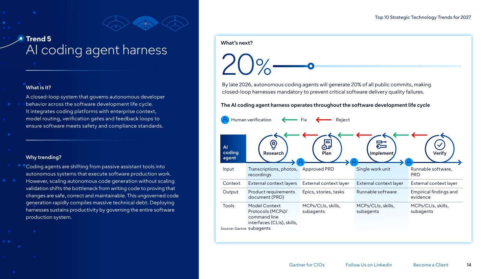</a></div></div></section><section class="slide" id="s15"><div class="shead"><span class="snum">15</span><h2>Delivering results with AI coding agent harnesses</h2></div><div class="body"><div><h3 class="sh">Trend 5 | AI Coding Agent Harness</h3><h3 class="sh">Action plan to drive modular automation and seamless integration</h3><p class="para">Steps 1 Assign platform team ownership 2 Convert architectural standards and domain rules 3 Enforce automatic delivery backpressure</p><p class="para">Expected outcome</p><p class="para">Action Consider coding agent harness configuration, model routing, approved tools, reusable workflows and verification policies.</p><h3 class="sh">Key players to support implementation success</h3><p class="para">CIO IT partners Business partners</p><p class="para">Lead: Establish AI-native software delivery as a strategic platform capability.​</p><p class="para">Fund: Invest in a dedicated platform team to own harness configurations, standards and governance.​</p><p class="para">Govern: Define risk, compliance and accountability requirements for autonomous software delivery.​</p><p class="para">Standardized enterprise software delivery Contextual guidance for every agent Unprecedented decision automation</p><p class="para">Maintain machine-readable inputs that provide clear, codified knowledge documentation.</p><p class="para">Platform engineering: Own harness configurations, model routing, reusable workflows and developer experience.​</p><p class="para">Architecture: Convert standards, design patterns and institutional knowledge into machine-readable context.​</p><p class="para">Security and risk: Embed verification gates and protect the harness control plane from tampering and misuse.​</p><p class="para">Gartner for CIOs Follow Us on LinkedIn Become a Client</p><p class="para">Run automated lint, test, security scanner and release-documentation gates before any code reaches human review.</p><p class="para">Product leaders: Define requirements, domain rules and acceptance criteria for agent-generated solutions.​</p><p class="para">Finance: Support long-term platform investment and measure value realization.​</p><p class="para">Legal and compliance: Ensure autonomous delivery aligns with regulatory, audit and policy requirements.​</p><p class="para">Top 10 Strategic Technology Trends for 2027</p></div><div><a href="slides/15.jpg" target="_blank">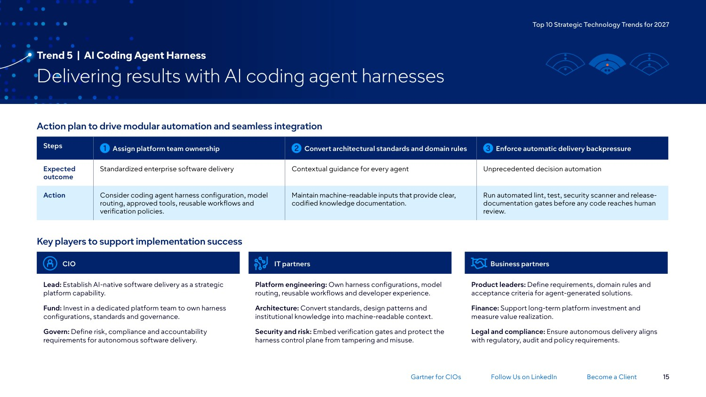</a></div></div></section><section class="slide" id="s16"><div class="shead"><span class="snum">16</span><h2>Trend 6 AI agent identity</h2></div><div class="body"><div><p class="note">Числа взяты из формулировок слайда дословно; подпись строки — фраза, в которой число стоит.</p><h3 class="sh">Trend 6 AI agent identity</h3><p class="para">What is it?</p><p class="para">A unique digital representation that actively governs autonomous digital workers across your organization. This framework correlates computational composite elements like model weights, prompts and credentials with runtime behaviors to establish continuous trust and human accountability.</p><p class="para">Why trending?</p><p class="para">AI agents expose massive vulnerabilities in legacy systems that can’t deliver just-in-time access. Failing to secure these active digital workers immediately risks halting zero-trust deployments and derailing broader automation investments.</p><p class="para">This urgent security crisis is driving rapid market consolidation as cybersecurity megavendors acquire specialized startups to deliver unified platforms that can govern human and machine actors.</p><p class="para">What’s next?</p><p class="para">By 2028, 25% of enterprise security breaches will trace back to AI agent abuse due to unmanaged machine privileges and legacy credential practices. If organizations don’t resolve these identity challenges, over half of their enterprise AI initiatives will halt entirely.</p><p class="para">The evolution from human-centric to composite identity for AI agents</p><p class="para">An AI agent’s identity is constructed from mutable computational elements and requires an identity model that actively correlates that agent’s identity with its runtime reality.</p><p class="para">Gartner for CIOs Follow Us on LinkedIn Become a Client</p><p class="para">Runtime reality</p><p class="para">Top 10 Strategic Technology Trends for 2027</p><p class="para">Runtime reality</p><p class="para">Roles, purpose, intent (derived and linked) and behavior</p><p class="para">Mutable elements</p><p class="para">Computational weights, system prompts, tool capabilities, assigned credentials</p><p class="para">The core</p><p class="para">Unique workload ID</p><p class="note">Source: Gartner</p><table><tr><th>Показатель</th><th>Значение</th></tr><tr><td>By 2028, 25% of enterprise security breaches will trace back to AI agent abuse due to unmanaged machine privileges and legacy credential practices. If organizations don’t resolve these identity challenges, over half of their enterprise AI initiatives will halt entirely.</td><td class=v>25</td></tr></table></div><div><a href="slides/16.jpg" target="_blank">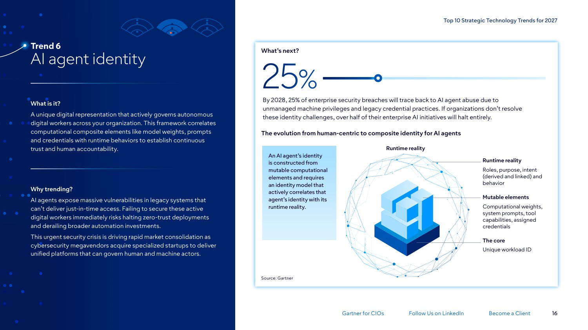</a></div></div></section><section class="slide" id="s17"><div class="shead"><span class="snum">17</span><h2>Delivering results with AI agent identities</h2></div><div class="body"><div><h3 class="sh">Trend 6 | AI Agent Identity</h3><h3 class="sh">Action plan to drive modular automation and seamless integration</h3><p class="para">Steps 1 Inventory all agent identities 2 Prohibit human credential sharing 3 Transition to composite identities 4 Demand converged identity platforms</p><p class="para">Expected outcome</p><p class="para">Action Discover, map and manage both sanctioned and shadow agents across your environments.</p><h3 class="sh">Key players to support implementation success</h3><p class="para">CIO IT partners Business partners</p><p class="para">Lead: Establish an enterprise strategy for governing AI agents as digital coworkers.​</p><p class="para">Prioritize: Invest in identity platforms that securely manage human, machine and AI agent identities together.​</p><p class="para">Govern: Define accountability, risk tolerance and ownership for all AI agent workloads.​</p><p class="para">Identification of identity gaps Clear ownership and auditability Defined control requirements and taxonomies</p><p class="para">Issue unique, dedicated credentials to agents.</p><p class="para">Identity and security: Implement composite identity models, least-privilege access and continuous verification for AI agents.​</p><p class="para">Enterprise architecture: Establish standards for agent registration, credential management and policy-based authorization.​</p><p class="para">Infrastructure and operations: Monitor agent activity, manage runtime controls and support secure deployment at scale.​</p><p class="para">Enforce dynamic, policy-controlled access and zero trust policies.</p><p class="para">Gartner for CIOs Follow Us on LinkedIn Become a Client</p><p class="para">Risk and compliance: Ensure AI agent activities align with governance, audit and regulatory requirements.​</p><p class="para">Legal: Define accountability frameworks for agent actions and decision authority.​</p><p class="para">Business leaders: Validate agent roles, permissions and acceptable use within business processes.​</p><p class="para">Top 10 Strategic Technology Trends for 2027</p><p class="para">A single control plane</p><p class="para">Engage vendors to ensure management of both human and machine workloads.</p></div><div><a href="slides/17.jpg" target="_blank">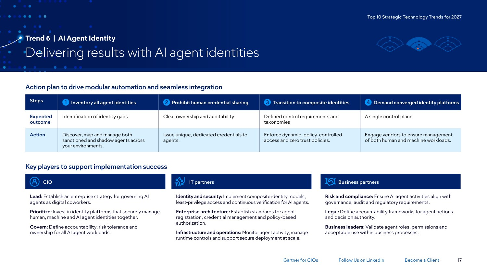</a></div></div></section><section class="slide" id="s18"><div class="shead"><span class="snum">18</span><h2>48 hours</h2></div><div class="body"><div><h3 class="sh">Trend 7 Autonomous exposure remediation</h3><p class="para">What is it?</p><p class="para">An integrated set of capabilities that uses AI and automation to find, prioritize and fix security vulnerabilities across the enterprise digital estate. This system automatically deploys patches into production environments and initiates testing loops to safely roll back failed deployments.</p><p class="para">Why trending?</p><p class="para">The traditional defensive process is broken, leaving organizations with an average 50-day exposure window where vulnerabilities remain unpatched. By replacing slow, manual validation with continuous machine-speed defense, technology leaders transform vulnerability management from a passive queue into an active operational shield.</p><p class="para">What’s next?</p><p class="para">By 2031, organizations deploying autonomous exposure remediation will reduce their average vulnerability containment window from weeks to within 48 hours.</p><p class="para">Autonomous exposure remediation phases</p><p class="para">Inventory</p><p class="para">(scan)</p><p class="para">AI</p><p class="para">Relative focus by</p><p class="para">Automation</p><p class="para">role</p><p class="para">Human</p><p class="para">Discover vulnerabilities</p><p class="para">Gartner for CIOs Follow Us on LinkedIn Become a Client</p><p class="para">Validate</p><p class="para">Plan remediation</p><p class="para">issues</p><p class="para">Top 10 Strategic Technology Trends for 2027</p><p class="para">Test and verify</p><p class="para">Remediate and roll back</p><p class="note">Source: Gartner</p></div><div><a href="slides/18.jpg" target="_blank">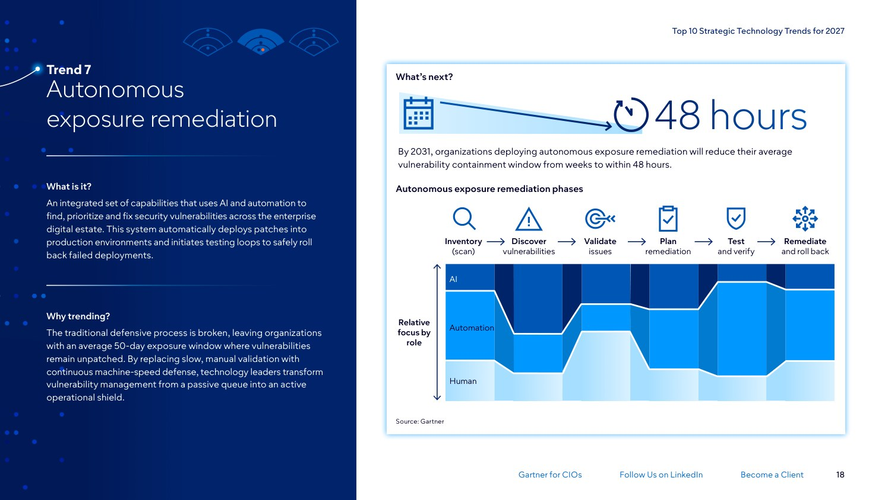</a></div></div></section><section class="slide" id="s19"><div class="shead"><span class="snum">19</span><h2>Delivering results with autonomous exposure remediation</h2></div><div class="body"><div><h3 class="sh">Trend 7 | Autonomous Exposure Remediation</h3><h3 class="sh">Action plan to drive modular automation and seamless integration</h3><p class="para">Steps 1 Initiate narrow scope projects 2 Integrate vulnerability detection 3 Balance automated scanning 4 Conduct cost analysis early and often</p><p class="para">Expected outcome</p><p class="para">Action Start with nonsensitive custom code bases to pilot automated patch generation and rollback capabilities to build experience.</p><h3 class="sh">Key players to support implementation success</h3><p class="para">CIO IT partners Business partners</p><p class="para">Lead: Establish a roadmap for autonomous exposure remediation aligned to cybersecurity and business resilience objectives.​</p><p class="para">Prioritize: Invest in automation capabilities that reduce exposure windows and improve remediation speed.​</p><p class="para">Govern: Define risk thresholds, oversight requirements and accountability for automated remediation decisions.​</p><p class="para">Safe testing and long-term scaling Increased discovery volume Improved performance and accuracy Balanced security budgets</p><p class="para">Suggest real-time fixes directly into active software development loops.</p><p class="para">Cybersecurity: Identify priority use cases and implement AI-augmented vulnerability discovery, validation and remediation workflows.​</p><p class="para">Software engineering: Integrate automated testing, fix validation and remediation into development processes.​</p><p class="para">Infrastructure and operations: Support deployment, monitoring and rollback capabilities needed to safely automate remediation.​</p><p class="para">Balance scanning with proportional prioritization practices to prevent overwhelming application teams with discovery queues.</p><p class="para">Gartner for CIOs Follow Us on LinkedIn Become a Client</p><p class="para">Risk and compliance: Align remediation practices with governance, regulatory and audit requirements.​</p><p class="para">Product leaders: Balance remediation priorities with delivery objectives and operational risk tolerance.​</p><p class="para">Finance: Support investments that improve resilience and reduce the business impact of exploitable exposures.​</p><p class="para">Top 10 Strategic Technology Trends for 2027</p><p class="para">Analyze compute costs and model token consumption to budget for unpredictable cybersecurity technologies.</p></div><div><a href="slides/19.jpg" target="_blank">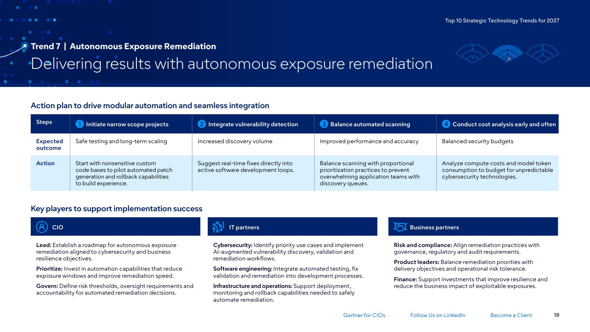</a></div></div></section><section class="slide" id="s20"><div class="shead"><span class="snum">20</span><h2>Architect durable agility</h2></div><div class="body"><div><h3 class="sh">Transition to sovereign, disposable and organic environments</h3><p class="para">SaaS fatigue, provider lock-in and energy limits are turning absolute cloud dependency into an existential risk. Building a resilient business on foreign-controlled models is untenable when providers can restrict, modify or withdraw them overnight. These trends focus on sovereign architecture: legal and technical independence, disposable stacks and early pilots of biological computing.</p><p class="para">Top 10 Strategic Technology Trends for 2027</p><p class="note">Gartner for CIOs Follow Us on LinkedIn Become a Client</p></div><div><a href="slides/20.jpg" target="_blank">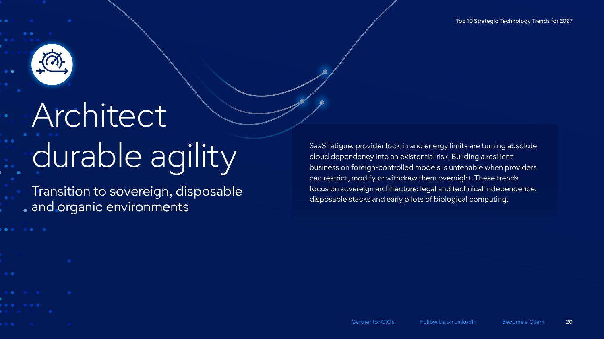</a></div></div></section><section class="slide" id="s21"><div class="shead"><span class="snum">21</span><h2>Trend 8 SovereignTech</h2></div><div class="body"><div><p class="note">Числа взяты из формулировок слайда дословно; подпись строки — фраза, в которой число стоит.</p><h3 class="sh">Trend 8 SovereignTech</h3><p class="para">What is it?</p><p class="para">Hardware, software, databases and AI models technically and legally architected to offer realistic exit strategies from critical providers. These technologies remain perpetually available to prevent lock-in and secure complete operational continuity.</p><p class="para">Why trending?</p><p class="para">Geopolitical friction and extraterritorial laws like the U.S. CLOUD Act pose real, immediate risks of sudden service cutoffs. Regulations like DORA contractually mandate proven cloud exit strategies and CADA prescribes strict sovereignty-enabling architectures. As AI automates professional tasks, massive subscription and API fees paid to foreign providers drain domestic wealth.</p><p class="para">To secure long-term continuity and prevent proprietary data from being permanently absorbed into foreign model weights, leaders must establish technical and legal independence.</p><p class="para">What’s next?</p><p class="para">By 2030, over 75% of non-U.S.-based organizations will adopt digital sovereignty strategies, shifting critical workloads to reduce geopolitical and vendor lock-in risks.</p><p class="para">What makes technology sovereign</p><p class="para">Gartner for CIOs Follow Us on LinkedIn Become a Client</p><p class="para">Top 10 Strategic Technology Trends for 2027</p><p class="para">SovereignTech (SovTech) assures your local operations will not collapse if a provider withdraws its IP, ensures AI-created value stays at home and secures your ability to act independently in a crisis.</p><p class="para">What is it?</p><p class="para">SovTech refers to technologies like cloud platforms, application code, servers, chips, databases, agents and AI models, technically and legally architected to enable realistic exit strategies from critical providers and remain perpetually available to customers to support real autonomy and resilience.</p><p class="note">Source: Gartner</p><table><tr><th>Показатель</th><th>Значение</th></tr><tr><td>By 2030, over 75% of non-U.S.-based organizations will adopt digital sovereignty strategies, shifting critical workloads to reduce geopolitical and vendor lock-in risks.</td><td class=v>75</td></tr></table></div><div><a href="slides/21.jpg" target="_blank">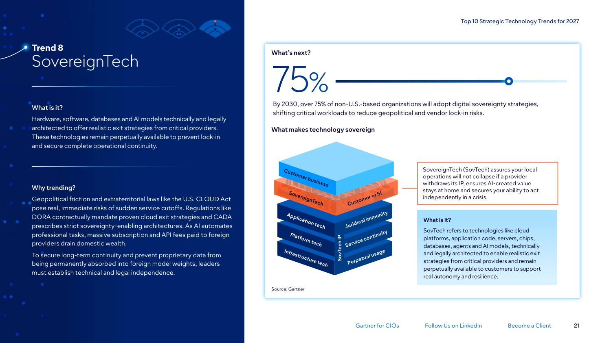</a></div></div></section><section class="slide" id="s22"><div class="shead"><span class="snum">22</span><h2>Delivering results with SovTech</h2></div><div class="body"><div><h3 class="sh">Trend 8 | SovereignTech</h3><h3 class="sh">Action plan to drive modular automation and seamless integration</h3><p class="para">Steps 1 Track distributed sovereign delivery models</p><p class="para">Expected outcome</p><p class="para">Action Evaluate private, on-premises and ecosystem-driven alternatives to standard public clouds.</p><h3 class="sh">Key players to support implementation success</h3><p class="para">CIO IT partners Business partners</p><p class="para">Lead: Define a digital sovereignty strategy aligned to business continuity and operational resilience.​</p><p class="para">Prioritize: Evaluate critical technology dependencies and establish realistic exit and replacement strategies.​</p><p class="para">Govern: Balance innovation, risk and autonomy when selecting cloud, AI and technology providers.​</p><p class="para">Defined sovereignty requirements Multiregional operational resilience Identification and understanding of emerging standards</p><p class="para">2 Master lean innovation strategies 3 Monitor global sovereignty alliances 4 Directly engage technology providers</p><p class="para">Use n-1 generation technology creatively and share capabilities reciprocally with trusted allies.</p><p class="para">Enterprise architecture: Design systems that support portability, interoperability and provider flexibility.​</p><p class="para">Infrastructure and cloud: Assess sovereign, distributed and multipartner delivery models for critical workloads.​</p><p class="para">Security and risk: Test continuity plans and ensure compliance with evolving sovereignty and resilience requirements.​</p><p class="para">Consider the Trusted Tech Alliance and the EU Tech Sovereignty Package.</p><p class="para">Gartner for CIOs Follow Us on LinkedIn Become a Client</p><p class="para">Procurement: Evaluate providers based on resilience, exit options and dependency risks, not just cost and functionality.​</p><p class="para">Legal and compliance: Monitor regulatory requirements related to data, operational and technology sovereignty.​</p><p class="para">Finance: Support investments that strengthen long-term resilience and reduce single-provider risk.​</p><p class="para">Top 10 Strategic Technology Trends for 2027</p><p class="para">Minimal risk exposure</p><p class="para">Assess provider appetite for sovereign delivery options and no-killswitch assurances.</p></div><div><a href="slides/22.jpg" target="_blank">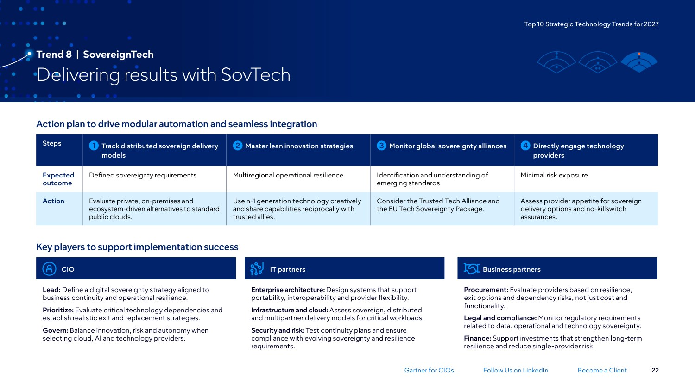</a></div></div></section><section class="slide" id="s23"><div class="shead"><span class="snum">23</span><h2>Trend 9 Disposable applications</h2></div><div class="body"><div><p class="note">Числа взяты из формулировок слайда дословно; подпись строки — фраза, в которой число стоит.</p><h3 class="sh">Trend 9 Disposable applications</h3><h3 class="sh">What is it?</h3><p class="para">Purpose-built software applications designed to be intentionally retired once their specific business purpose has been fulfilled or is no longer relevant. These temporary solutions operate as enterprise-grade applications with predefined lifespans, rather than permanent fixtures.</p><h3 class="sh">Why trending?</h3><p class="para">AI-powered vibe coding tools are democratizing software creation, empowering both citizen and professional developers to rapidly generate customized applications for short-term operational needs. This shift allows deployment of targeted, temporary solutions with predefined lifespans instead of accumulating permanent, costly software assets.</p><h3 class="sh">What’s next?</h3><p class="para">By 2030, widespread SaaS fatigue and AI-driven software abundance will force leading organizations to ensure 80% of new applications are disposable and easy to replace.</p><p class="para">Disposable applications fundamentally alter how organizations buy, design and budget for software. Rather than maintaining legacy platforms indefinitely, the application portfolio becomes a dynamic system that continuously renews itself as redundant assets are retired.</p><h3 class="sh">The disposable application life cycle</h3><p class="para">Identify need</p><p class="para">Identify business</p><p class="para">opportunity,</p><p class="para">business capability and success criteria.</p><p class="para">Source: Gartner</p><p class="para">Application lifespan follows business value delivery</p><p class="para">Operate and Define and design Build and deploy</p><p class="para">Design application and define expected</p><p class="para">lifespan, ownership and</p><p class="para">retirement</p><p class="para">triggers.</p><p class="para">Gartner for CIOs Follow Us on LinkedIn Become a Client</p><p class="para">Rapidly build</p><p class="para">and deploy, using approved</p><p class="para">platforms, standards and</p><p class="para">guardrails.</p><p class="para">Top 10 Strategic Technology Trends for 2027</p><p class="para">deliver</p><p class="para">Operate securely</p><p class="para">and reliably while monitoring</p><p class="para">performance, cost and business</p><p class="para">value.</p><p class="para">Evaluate and</p><p class="para">decide</p><p class="para">Review business value and decide</p><p class="para">whether to continue or retire</p><p class="para">application.</p><p class="para">Retire</p><p class="para">Safely and cleanly</p><p class="para">retire. Archive</p><p class="para">data, remove</p><p class="para">integrations, revoke access and</p><p class="para">update portfolio.</p><table><tr><th>Показатель</th><th>Значение</th></tr><tr><td>By 2030, widespread SaaS fatigue and AI-driven software abundance will force leading organizations to ensure 80% of new applications are disposable and easy to replace.</td><td class=v>80</td></tr></table></div><div><a href="slides/23.jpg" target="_blank">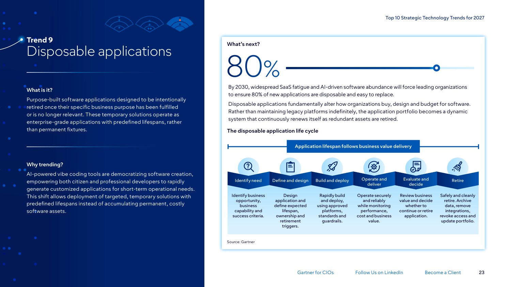</a></div></div></section><section class="slide" id="s24"><div class="shead"><span class="snum">24</span><h2>Delivering results with disposable applications</h2></div><div class="body"><div><h3 class="sh">Trend 9 | Disposable Applications</h3><h3 class="sh">Action plan to drive modular automation and seamless integration</h3><p class="para">Steps 1 Audit your application portfolio 2 Establish a dedicated platform team 3 Position upcoming SaaS contract negotiations</p><p class="para">Expected outcome</p><p class="para">Action Classify which core capabilities require permanent software and which can be served by temporary, on-demand solutions.</p><h3 class="sh">Key players to support implementation success</h3><p class="para">CIO IT partners Business partners</p><p class="para">Lead: Establish a disposable application strategy that aligns application lifespans with business value.​</p><p class="para">Invest: Fund the platforms, automation and governance needed to support rapid application creation and retirement.​</p><p class="para">Govern: Define accountability, ownership and life cycle standards across the application portfolio.​</p><p class="para">A roadmap for application modernization Rapid software life cycle flows Avoid vendor lock-in</p><p class="para">Oversee, govern and manage the flow of transient assets across the enterprise.</p><p class="para">Platform engineering: Provide the tools, guardrails and automation needed to build and retire applications at scale.​</p><p class="para">Enterprise architecture: Define standards that align governance to application risk, criticality and expected lifespan.​</p><p class="para">Security and operations: Manage application retirement, data life cycle requirements and security controls.​</p><p class="para">Gartner for CIOs Follow Us on LinkedIn Become a Client</p><p class="para">Use renewals as leverage to reduce seat counts and secure open APIs.</p><p class="para">Business owners: Define application objectives, expected lifespan and retirement criteria.​</p><p class="para">Finance: Shift funding models to support application creation, renewal and retirement.​</p><p class="para">Risk and compliance: Ensure governance and controls remain appropriate throughout the application life cycle.​</p><p class="para">Top 10 Strategic Technology Trends for 2027</p></div><div><a href="slides/24.jpg" target="_blank">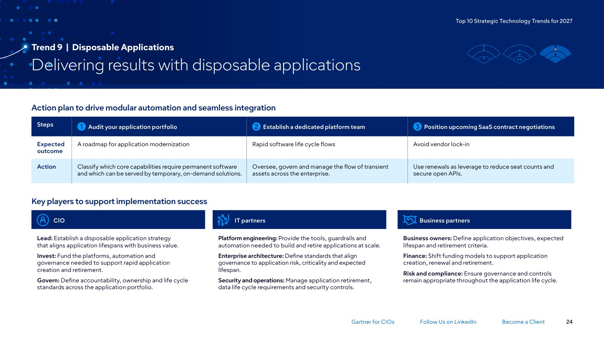</a></div></div></section><section class="slide" id="s25"><div class="shead"><span class="snum">25</span><h2>Trend 10 Wetware as a service</h2></div><div class="body"><div><p class="note">Числа взяты из формулировок слайда дословно; подпись строки — фраза, в которой число стоит.</p><h3 class="sh">Trend 10 Wetware as a service</h3><p class="para">What is it?</p><p class="para">An emerging operational model that provides remote cloud-based access to living or synthetic biological systems for computation. These hosted organic processors utilize the natural plasticity of biochemical networks to run complex algorithms with extreme energy efficiency.</p><p class="para">Why trending?</p><p class="para">Traditional silicon computer hardware can’t scale enterprise AI indefinitely due to unsustainable environmental and energy demands. Lab-grown biological neurons can perform goal-oriented computation with extreme efficiency, running complex pattern recognition algorithms on a fraction of traditional server power. Startups are bridging the physical science gap by hosting delicate biocomputers in remote, sterile laboratories. Biocomputing as a cloud-based subscription service allows organizations to launch immediate technical pilots without investing in capital-intensive wet labs or specialized neurological transport infrastructure.</p><p class="para">What’s next?</p><p class="para">By 2030, 25% of enterprise organizations prioritizing specialized low-power AI will deploy biological computing to bypass traditional silicon limits.</p><p class="para">Wetware as a service as part of computing orchestration</p><p class="para">Orchestrators of that environment</p><p class="para">CIOs</p><p class="para">Gartner for CIOs Follow Us on LinkedIn Become a Client</p><p class="para">Top 10 Strategic Technology Trends for 2027</p><p class="para">Wetware is not the only future computing model. It is part of a broader collection of computing paradigms that will work together.</p><p class="para">Workloads routed to the appropriate platform</p><p class="note">Source: Gartner</p><table><tr><th>Показатель</th><th>Значение</th></tr><tr><td>By 2030, 25% of enterprise organizations prioritizing specialized low-power AI will deploy biological computing to bypass traditional silicon limits.</td><td class=v>25</td></tr></table></div><div><a href="slides/25.jpg" target="_blank">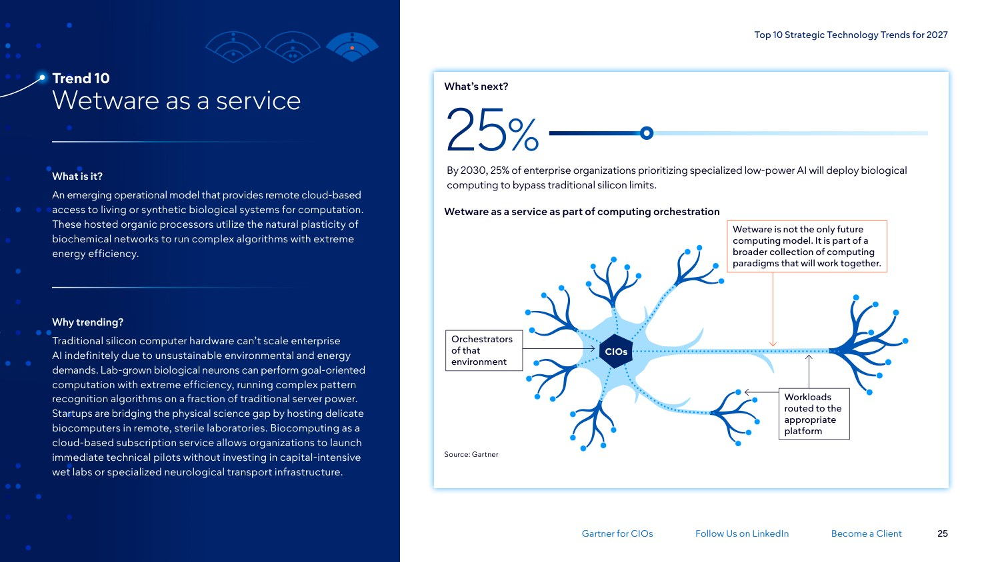</a></div></div></section><section class="slide" id="s26"><div class="shead"><span class="snum">26</span><h2>Delivering results with wetware as a service</h2></div><div class="body"><div><h3 class="sh">Trend 10 | Wetware as a Service</h3><h3 class="sh">Action plan to drive modular automation and seamless integration</h3><p class="para">Steps 1 Audit software architectures 2 Establish low-risk cloud sandboxes 3 Convene an interdisciplinary task force</p><p class="para">Expected outcome</p><p class="para">Action Identify high-consumption pattern recognition workloads suitable for redirection to low-power biological substrates.</p><h3 class="sh">Key players to support implementation success</h3><p class="para">CIO IT partners Business partners</p><p class="para">Lead: Establish a strategy for integrating biological computing into future AI and infrastructure roadmaps.​</p><p class="para">Invest: Develop orchestration capabilities that dynamically route workloads across diverse computing platforms.​</p><p class="para">Govern: Define risk, ethical and resilience frameworks for biological computing adoption.​</p><p class="para">Identification of high-return use cases Safe piloting of volatile biocomputer lifespans</p><p class="para">Use remote subscription platforms to build early developer familiarity with living processors.</p><p class="para">Enterprise architecture: Identify workloads that could benefit from biological processing and hybrid computing models.​</p><p class="para">Platform engineering: Build orchestration layers that manage workload routing across silicon, quantum, neuromorphic and biological processors.​</p><p class="para">Security and risk: Develop controls for neurodata privacy, redundancy and business continuity.​</p><p class="para">Bridge the talent gap Safeguards that protect cognitive datasets and neurorights frameworks</p><p class="para">Combine software developers, neuroscientists and ethicists to fuse computer science and neurology.</p><p class="para">Gartner for CIOs Follow Us on LinkedIn Become a Client</p><p class="para">Research and innovation teams: Evaluate opportunities to apply biological computing to complex optimization and discovery challenges.​</p><p class="para">Legal and compliance: Establish policies addressing ethical use, intellectual property and emerging neurorights considerations.​</p><p class="para">Finance: Support investment in next-gen computing.​</p><p class="para">Top 10 Strategic Technology Trends for 2027</p><p class="para">4 Design replication and redundancy policies</p><p class="para">Protect critical application data against volatile cell lifespans and sudden processor death.</p></div><div><a href="slides/26.jpg" target="_blank">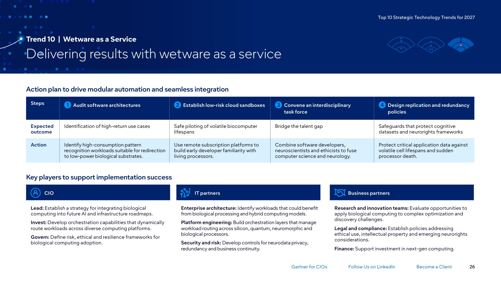</a></div></div></section><section class="slide" id="s27"><div class="shead"><span class="snum">27</span><h2>Actionable, objective insights</h2></div><div class="body"><div><h3 class="sh">Explore these additional complimentary resources and tools for IT leaders:</h3><h3 class="sh">Tool AI Use Case Insights</h3><p class="para">Explore, evaluate and prioritize 1,300+ proven AI use cases and real-world case studies.</p><p class="para">Get Started</p><h3 class="sh">Already a client? Get access to even more resources in your client portal. Log In ↗</h3><h3 class="sh">Tool Gartner Benchmarking and Diagnostics</h3><p class="para">Prioritize, budget and optimize with tailored benchmarks for critical domains.</p><p class="para">Get Started</p><h3 class="sh">eBook The Gartner CIO Report</h3><p class="para">Explore the top CIO challenges, according to 12K+ of your CIO peers.</p><p class="para">Download Now</p><h3 class="sh">Tool AskGartner: Your AI-Powered Thought Partner</h3><p class="para">Get AI-powered access to analyst-vetted insights to build frameworks and speed up execution.</p><p class="para">Get Started</p></div><div><a href="slides/27.jpg" target="_blank">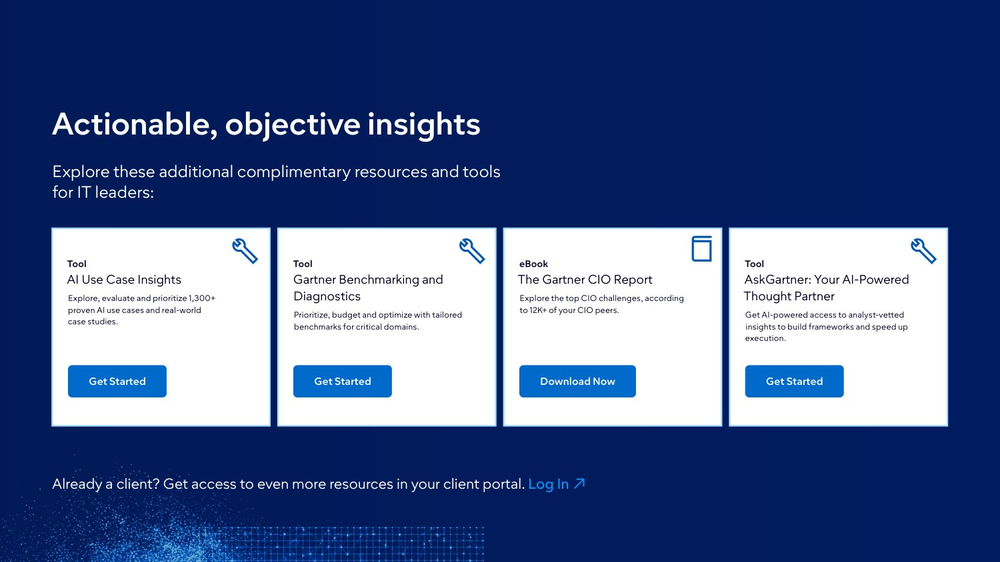</a></div></div></section><section class="slide" id="s28"><div class="shead"><span class="snum">28</span><h2>Connect with us</h2></div><div class="body"><div><h3 class="sh">Get actionable, objective business and technology</h3><p class="para">insights that drive smarter decisions and stronger performance on your mission-critical priorities.</p><p class="para">U.S.: 1 855 322 5484</p><p class="para">International: +44 (0) 3300 296 946</p><p class="para">Become a Client</p><p class="para">Leaders who know, choose Gartner. See how. gartner.com/en/what-we-do</p><p class="para">Gartner for CIOs gartner.com/en/chief-information-officer/ products/gartner-for-cios</p><p class="para">Stay connected to the latest insights</p><p class="para">Attend a Gartner conference View Conference</p><p class="note">© 2026 Gartner, Inc. and/or its affiliates. All rights reserved. GTS_542668</p></div><div><a href="slides/28.jpg" target="_blank">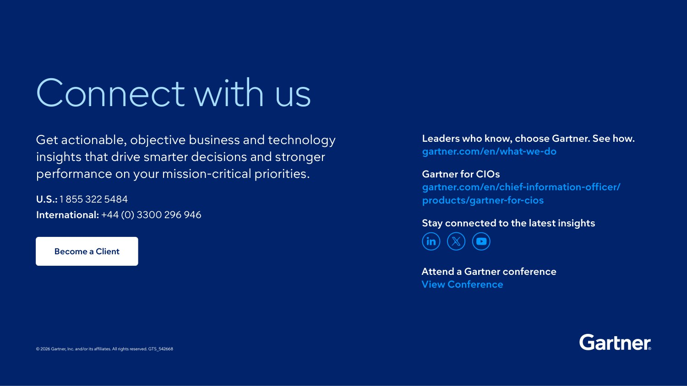</a></div></div></section></main></div><script>function filter(){var q=document.getElementById('q').value.toLowerCase();document.querySelectorAll('section.slide').forEach(function(s){s.style.display=s.innerText.toLowerCase().indexOf(q)>=0?'':'none'});}</script></body></html>